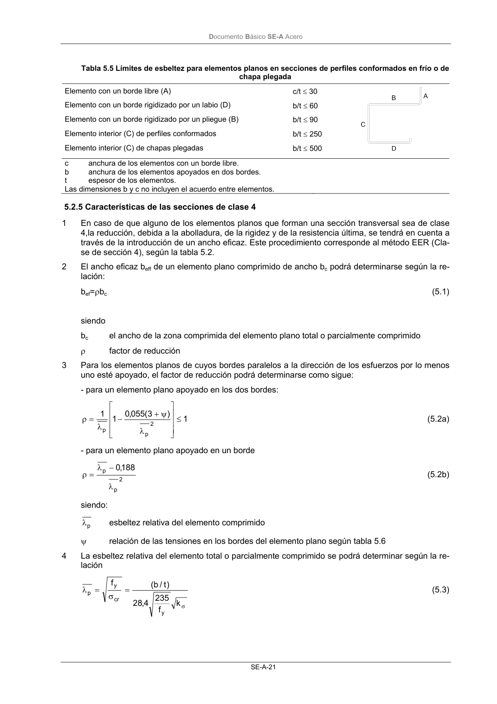

DB-SE-A Acero · edición 2007-10-23 · capa oficial
Documento DB-SE-A-oficial · SHA-256 del PDF 9ed9ea694aabfbda3bfbbef40dfe9223fde05d13c35bc2ba9751e5a96a22a64f
Copia fiel del PDF fuente · Fuente oficial
Ficha de la disposición en la fuente oficial
Formatos: JSON del segmento · Markdown
sección tubular Compresión Flexión simple Flexocompresión 2 50 t d ε ≤ 2 70 t d ε ≤ 2 90 t d ε ≤ Factor de reducción yf 235 = ε 1) ψ ≤ -1 es aplicable a los casos con deformaciones unitarias que superen las correspondientes al lími- te elástico DocumentoBásico SE-A Acero SE-A-20 Tabla 5.4 Límites de esbeltez para elementos planos, apoyados en un borde y libre el otro, total o parcial- mente comprimidos. Geometría Solicitación Elemento plano Límite de esbeltez: c/t máximo Compresión + Tracción - Clase 1 Clase 2 Clase 3 Compresión 9ε 10 ε 14 ε Flexocompresión; borde libre com- primido α ε 9 α ε 10 1 k 21 σ ε Flexocompresión; borde libre trac- cionado 5 ,1 9 α ε 5 ,1 10 α ε 2 k 21 σ ε Coeficientes de abolladura 1 k σ y 2 k σ en función de ψ, siendo ψ la relación de las tensiones en los bor- des (compresión positiva): 1 k σ=0,57-0,21 ψ+0,07 ψ2 para 1≥ ψ ≥-3 2 k σ=0,578/(0,34+ ψ) para 1≥ ψ ≥0 2 k σ=1,7-5 ψ+17,1 ψ2 para 0≥ ψ ≥-1 Factor de reducción yf 235 = ε DocumentoBásico SE-A Acero SE-A-21 Tabla 5.5 Límites de esbeltez para elementos planos en secciones de perfiles conformados en frío o de chapa plegada Elemento con un borde libre (A) c/t ≤ 30 Elemento con un borde rigidizado por un labio (D) b/t ≤ 60 Elemento con un borde rigidizado por un pliegue (B) b/t ≤ 90 Elemento interior (C) de perfiles conformados b/t ≤ 250 Elemento interior (C) de chapas plegadas b/t ≤ 500 c anchura de los elementos con un borde libre. b anchura de los elementos apoyados en dos bordes. t espesor de los elementos. Las dimensiones b y c no incluyen el acuerdo entre elementos.

